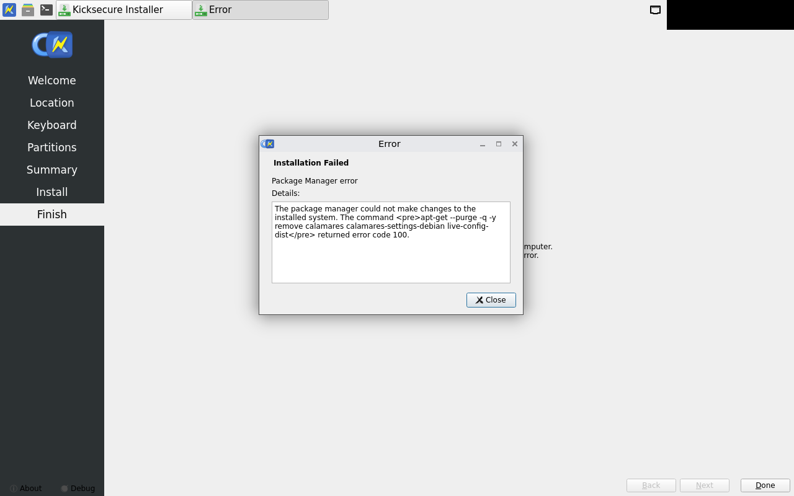

calamares-install fail
exit 5
config_dir=/usr/local/etc/security-misc-shared_maint.d\n++ true 'folder 1: /etc/security-misc-shared_maint.d'\n++ true 'folder 2: /usr/local/etc/security-misc-shared_maint.d'\n++ shopt -u nullglob\n++ check_scripts_to_skip\n++ [[ -v SKIP_SCRIPTS ]]\n++ SKIP_SCRIPTS=\n++ local skip_script\n++ '[' true = false ']'\n+ source /usr/share/debconf/confmodule\n++ _DEBCONF_IMPL=\n++ '[' '' ']'\n++ '[' -x /usr/share/debconf/frontend ']'\n++ '[' '!' -h /usr/share/debconf/frontend ']'\n++ _DEBCONF_IMPL=debconf\n++ '[' '!' 1 ']'\n++ '[' -z '' ']'\n++ exec\n++ '[' debconf = cdebconf ']'\n++ exec\n++ DEBCONF_REDIR=1\n++ export DEBCONF_REDIR\n++ DEBCONF_OLD_FD_BASE=4\n++ export DEBCONF_OLD_FD_BASE\n+ set -o errexit\n+ true '\n#####################################################################\n## INFO: BEGIN: security-misc-shared postinst triggered /usr\n#####################################################################\n'\n+ case \"$1\" in\n+ printf '%s\n' 'INFO: triggered security-misc-shared: '''security-misc-shared''' security-misc-shared DPKG_MAINTSCRIPT_NAME: '''postinst''' $\\*: '''triggered /usr''' 2: '''/usr''''\nINFO: triggered security-misc-shared: 'security-misc-shared' security-misc-shared DPKG_MAINTSCRIPT_NAME: 'postinst' $\\*: 'triggered /usr' 2: '/usr'\n+ /usr/share/security-misc/lkrg/lkrg-virtualbox\n+ /usr/libexec/security-misc/mmap-rnd-bits\n/usr/libexec/security-misc/mmap-rnd-bits: INFO: Successfully written ASLR map config file:\n/etc/sysctl.d/30_security-misc_aslr-mmap.conf\n+ permission_hardening\n+ printf '%s\n' 'Running SUID Disabler and Permission Hardener... See also:'\nRunning SUID Disabler and Permission Hardener... See also:\n+ printf '%s\n' https://www.kicksecure.com/wiki/SUID_Disabler_and_Permission_Hardener\nhttps://www.kicksecure.com/wiki/SUID_Disabler_and_Permission_Hardener\n+ printf '%s\n' '/var/lib/dpkg/info/security-misc-shared.postinst: INFO: running: permission-hardener enable'\n/var/lib/dpkg/info/security-misc-shared.postinst: INFO: running: permission-hardener enable\n+ permission-hardener enable\npermission-hardener [NOTICE]: To compare the current and previous permission modes, install 'meld' (or preferred diff tool) for comparison of file mode changes:\n sudo apt install --no-install-recommends meld\n meld /var/lib/permission-hardener-v2/existing_mode/statoverride /var/lib/permission-hardener-v2/new_mode/statoverride\n+ printf '%s\n' '/var/lib/dpkg/info/security-misc-shared.postinst: INFO: Permission hardening success.'\n/var/lib/dpkg/info/security-misc-shared.postinst: INFO: Permission hardening success.\n+ exit 0\n+ exit_handler_pre\n+ '[' -n '' ']'\n+ true '/var/lib/dpkg/info/security-misc-shared.postinst: END.'\nErrors were encountered while processing:\n grub-pc\nE: Sub-process /usr/bin/dpkg returned an error code (1)"
[PYTHON JOB]: "stderr:None"
08:56:51 [6]: virtual void Calamares::JobThread::run()
Skipping non-emergency job "Running shell processes…"
.. Skipping non-emergency job "dracut"
.. Skipping non-emergency job "Unmounting file systems…"
.. Skipping non-emergency job "Running shell processes…"
08:56:51 [1]: void Calamares::ViewManager::onInstallationFailed(const QString&, const QString&)
ERROR: Installation failed: "Package Manager error"
.. - message: "Package Manager error"
.. - details: The package manager could not make changes to the installed system. The command <pre>apt-get --purge -q -y remove calamares calamares-settings-debian live-config-dist</pre> returned error code 100.
08:56:51 [6]: void Calamares::ViewManager::onInstallationFailed(const QString&, const QString&)
Calamares will quit when the dialog closes.
08:56:51 [6]: void Calamares::callQmlFunction(QQuickItem*, const char*)
QML "onLeave()" is missing.
08:56:51 [6]: void Config::doNotify(bool, bool)
Notification not sent; completion: failed
08:56:51 [6]: void {anonymous}::PowerManagementInterface::uninhibitSleep()
Sleep was never inhibited.
new -- needs approval welcome — no approved golden yet

new -- needs approval partitions — no approved golden yet

new -- needs approval summary — no approved golden yet

new -- needs approval failure — no approved golden yet
